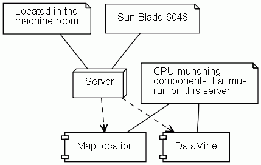

Last change: Thursday, November 29, 2007 3:02 pm
Last change: Thursday, November 29, 2007 3:02 pm
Unless otherwise expressly stated, all original material on this page created by Diomidis Spinellis is licensed under a Creative Commons Attribution-Share Alike 3.0 Greece License.
@note tag.
The corresponding text will be split into lines, as specified in the note.
Multiple tags can be used to add more notes to the same element.
More complicated, (one to many) relationships can be established
by creating an element with a note shape, setting its contents
to its comment text through the @opt commentname tag,
and associating it with other elements with the @assoc
tag.
/**
* @opt shape node
* @note Located in the
* machine room
* @note Sun Blade 6048
* @depend - - - MapLocation
* @depend - - - DataMine
*/
class Server{}
/** @opt shape component */
class MapLocation {}
/** @opt shape component */
class DataMine {}
/**
* CPU-munching
* components that must
* run on this server
* @opt shape note
* @opt commentname
* @assoc - - - MapLocation
* @assoc - - - DataMine
*/
class munchComment {}
|  |
| Contents | « Previous Next (Class Diagram Options) » |
Last change: Thursday, November 29, 2007 3:02 pm
Unless otherwise expressly stated, all original material on this page
created by Diomidis Spinellis is licensed under a
Creative Commons Attribution-Share Alike 3.0 Greece License.